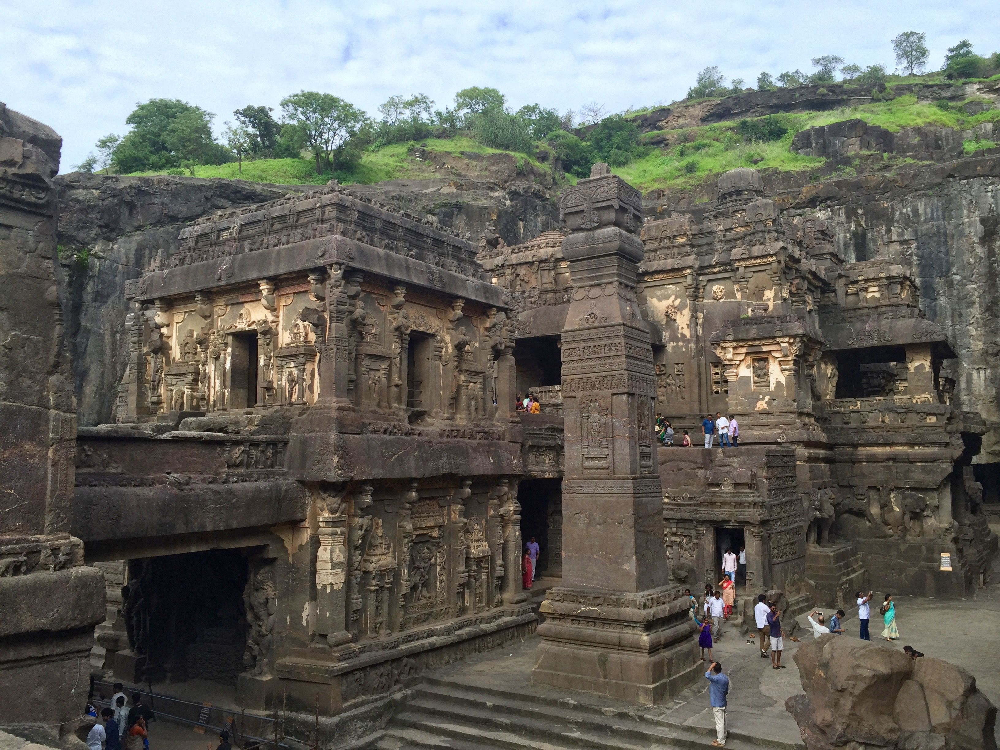

Megalithic Contruction
Styles and Periods
?
-
Who..
were the brilliant people creating things that cannot be equaled today
-
What..
technology and techniques were used to build such impressive structures
-
When..
were the periods of the different building styles
-
Where..
can these structures be found
-
How..
did we lose the ability and knowledge to build in this manner
Styles of Build
-
Rock Cut/Cyclopian
Oldest known, most heavily eroded, including roads/vehicle tracks and unearthed subterranian complexes
-
Pancake
Usually older, vertically stacked, eliptically shaped or "melted" stones
-
Polygonal
Massive stones perfectly interlocked using no mortar or bonding medium
-
Modern
Most recent, little to zero erosion, very artistic and refined
Timeline
Most building took place during these times in each given period/epoch
-
Neogene Period
15-5 million years ago
Rock cut and cyclopian cities and structures, above and below ground, foundations, roads, terraces, wells, pits, etc..
-
Pleistocene Epoch
40-25 thousand years ago
Megalithic and underground structures, monoliths, cromlechs, dolmens, and stone circles
-
Early Holocene Epoch
11.7 thousand years ago
More of the structures as seen in previous epoch, sometimes with wood still remaining incorperated into the structures

Eski-Kermen, Sevastopol
Older Rock Cut Style
Due to their age and level of erosion, less data can be gathered from this style than from other megalithic build styles.
Examples of old rock cut style
-

Gerdek Rock Tomb
Çorum, Turkey
-
 Photo By Diego Delso
Photo By Diego Delso
El Deir
Petra, Jordan
-

Grottes de Calès
Lamanon, France
Newer Rock Cut Style
Due to their age and level of erosion, less data can be gathered from this style than from other megalithic build styles.

Demre, Turkey
Examples of newer rock cut style
-

Longmen Grottoes
Henan, China
-

Kailasa Temple
Ellora Caves, Maharashtra, India

Pancake style
Polygonal style

Examples of polygonal style
-
Phimai Historic Park
Phimai, Thailand
By Supanut Arunoprayote - Own work, CC BY 4.0, Link -

Kankaimon Gate, Shuri Castle
Okinawa, Japan
By Ijanderson977 - Own work, Public Domain, Link -

Delphi
Delphi, Greece
By Gwhobbs - Own work, CC BY-SA 4.0, Link